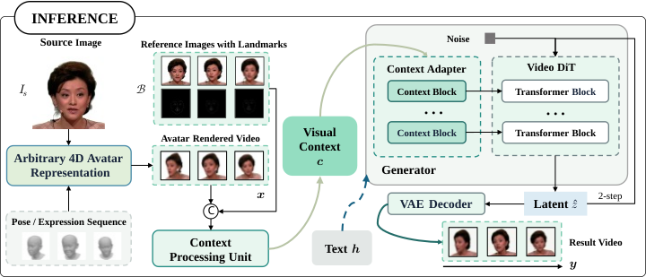

RESEARCH PROJECT 2027
AvatarBoost: A Universal Real-Time Video Enhancement Model for 4D Avatarization
Render 4D avatar videos with enhanced realism and identity preservation in real time while maintaining multi-view consistency and expression accuracy.
01
Abstract
High-quality 4D avatarization requires multi-view consistency, identity preservation, and faithful expression control, while meeting the efficiency demands of real-time applications. Geometry-based rendering offers multi-view consistency and motion control but can lack realism. Video diffusion can improve realism but is typically slow and does not inherently ensure multi-view or identity consistency. We introduce AvatarBoost, a general-purpose, real-time video enhancement model that leverages video diffusion to boost existing 4D avatarization methods. Specifically, we refine the rendered videos through a diffusion-based restoration process guided by multiple reference images and facial landmark cues. The reference images provide complementary identity and appearance information, while landmark guidance helps preserve facial expressions and head motion. Together, these conditions guide the model to suppress rendering artifacts and recover fine details while maintaining identity consistency and motion fidelity. Finally, we distill the restoration model into a two-step generator using Distribution Matching Distillation (DMD), enabling real-time video enhancement. Experiments demonstrate that AvatarBoost improves visual realism and identity preservation while maintaining multi-view consistency and expression accuracy across diverse head motions and camera trajectories.
- We introduce AvatarBoost, a video enhancement model with a common rendered-video interface designed to accommodate different upstream 4D avatar models.
- We develop a conditional video restoration model that combines coarse renders, multiple identity references, and landmark-derived facial masks to guide appearance enhancement.
- We develop a few-step distillation scheme for avatar restoration using distribution matching and low-rank adaptation, targeting efficient inference and parameter-efficient training.
02
Method
AvatarBoost improves videos from different 4D avatar representations.

03
Results
Examples across multi-view and single-view avatar settings.
04
BibTeX
@inproceedings{author2027paper,
title = {AvatarBoost: A Universal Real-Time Video Enhancement Model for 4D Avatarization},
author = {Anonymous Authors},
booktitle = {Conference Name},
year = {2027}
}